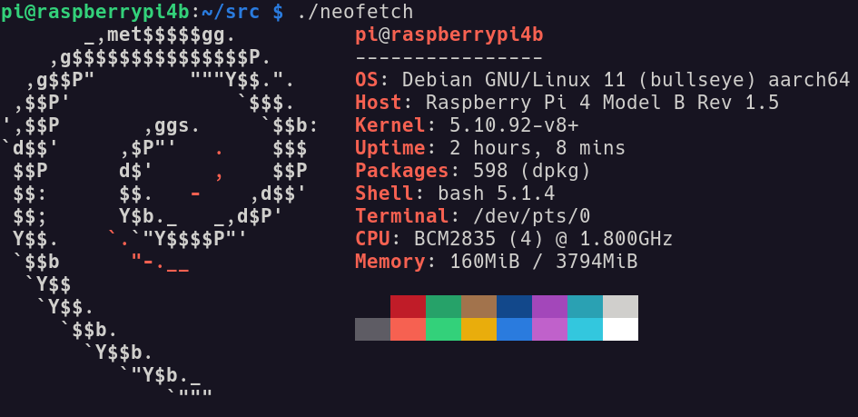

rpi-imager tool on USB drive.sudo pacman -Syu rpi-imager
/boot and /rootfs/etc/dhcpcd.conf -# Example static IP configuration:
interface eth0
static ip_address=192.168.1.120/24
static routers=192.168.1.1
static domain_name_servers=192.168.1.1 8.8.8.8
I tried to connect rpi with ethernet to laptop directly to access it in headless mode but I failed to do so.
Then I connected rpi to my TP-Link WiFi extender with ethernet directly.
Use nmap -sn 192.168.1.0/24 to find the list of all connected clients from laptop.
From terminal on laptop, I can login now - (default username: pi, default password: raspberry)
ssh pi@192.168.1.120
On first ssh into rpi, I did - passwd and changed the password for pi user.
Then I did sudo raspi-config and changed Locale (country, time, language), enabled SSH (from Interfacing Options), sudo apt update and sudo apt upgrade. Then enable VNC (raspi-config -> Interfacing Options).
Since I downloaded a Lite version of RPI OS, so enabling VNC (raspi-config -> Interfacing Options) will first download and install VNC (server) related packages. On manjaro laptop, I installed generic script x86_64 vncviewer and libxcrypt-compact. Although I have enabled VNC on rpi, when I connect it from laptop (using vncviewer), it says “Cannot currently show the desktop” because the OS is Lite (would not have graphical environment).
neofetch is available from the raspberry pi os repos, but it takes about 22 MB install size because it downloads additional dependencies. However, neofetch mentions that it requires only bash as a mandatory dependency, therefore instead of installing neofetch from the repos, I just downloaded the shell file on rpi -
wget https://raw.githubusercontent.com/dylanaraps/neofetch/master/neofetch
Then make this file executable and run.
